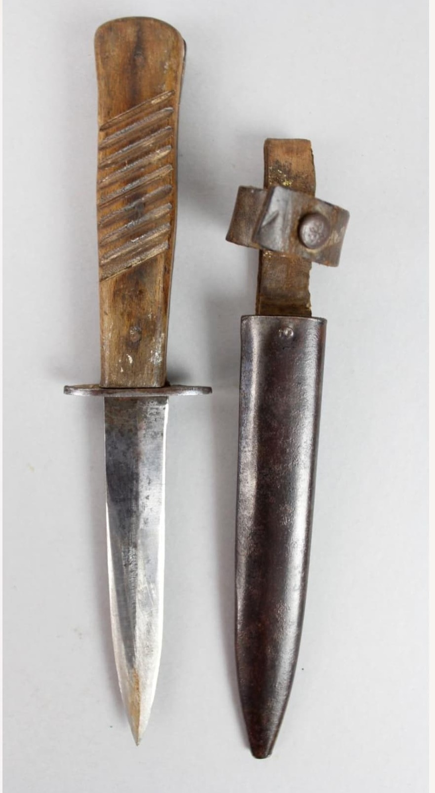
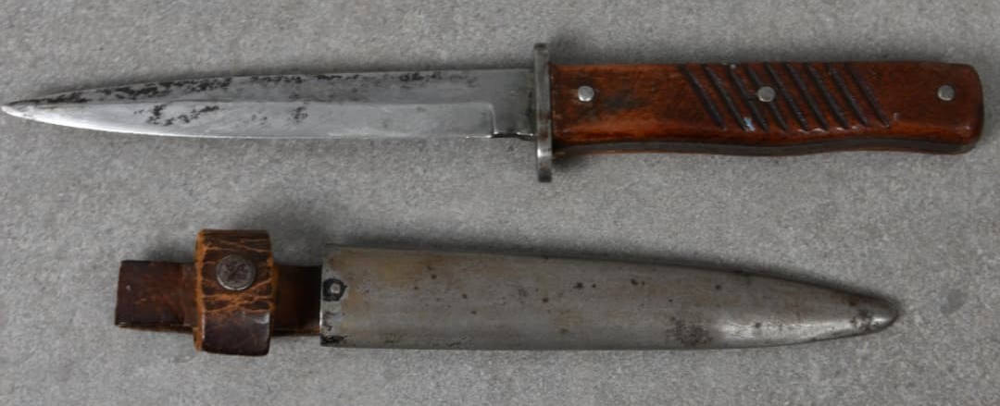
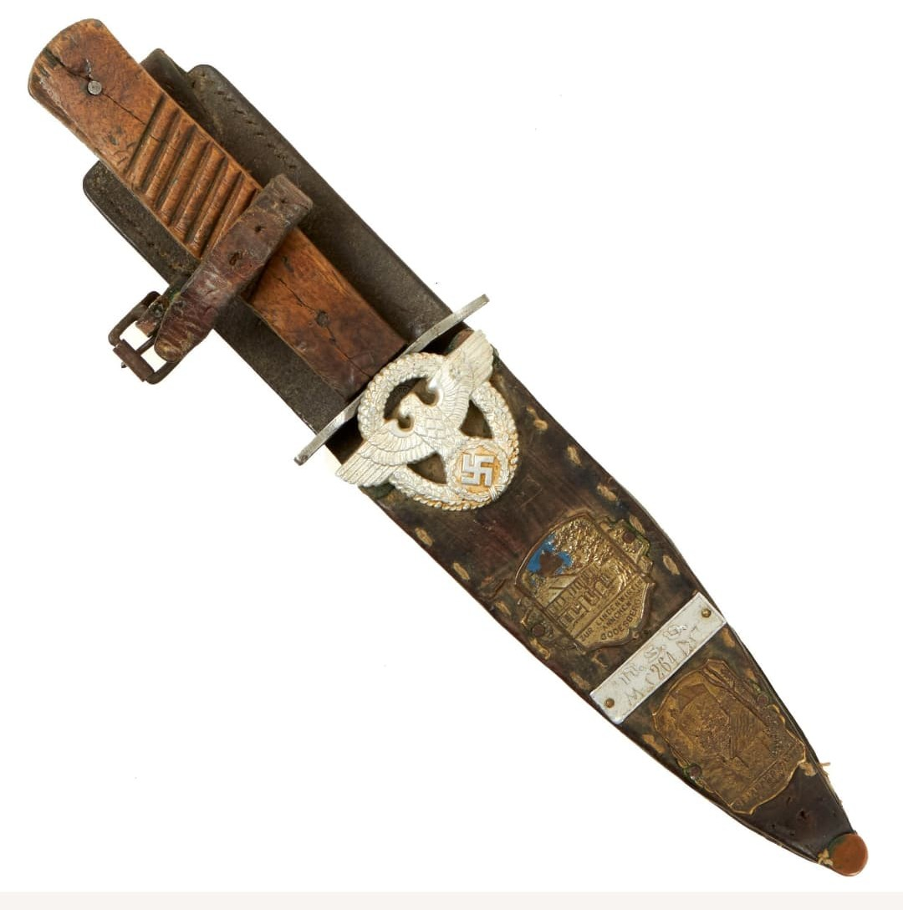

En plus des baïonnettes, les soldats allemands utilisent des couteaux de combat comme armes d’appoint et outils polyvalents. Ces couteaux, souvent appelés Trench Knives, servent au combat rapproché, aux tâches quotidiennes et à la survie sur le front.
On trouve de nombreux modèles, allant des couteaux réglementaires aux pièces privées achetées par les soldats. Leur forme et leurs fourreaux varient selon les fabricants et les périodes.
Le couteau de combat allemand typique possède une lame fixe, généralement droite ou légèrement courbe, avec un tranchant simple. La poignée est en bois ou en bakélite, parfois munie d’une garde simple pour protéger la main.
Le fourreau est en métal ou en cuir, porté sur le ceinturon ou fixé à l’équipement. Certains modèles sont inspirés des couteaux de tranchée de la Première Guerre mondiale, d’autres sont des productions spécifiques à la Seconde Guerre mondiale.


Les couteaux de combat allemands présentent une grande variété de formes et de tailles. Certains sont des modèles militaires, d’autres des productions civiles adaptées à un usage sur le front.
Ils sont utilisés pour le combat rapproché, mais aussi pour couper, préparer du matériel, bricoler et accomplir de nombreuses tâches quotidiennes du soldat.
